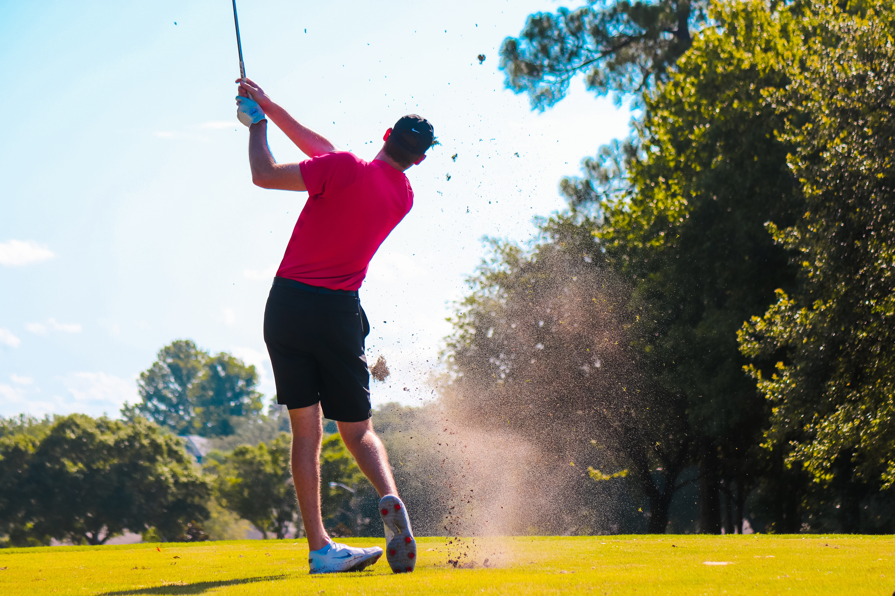
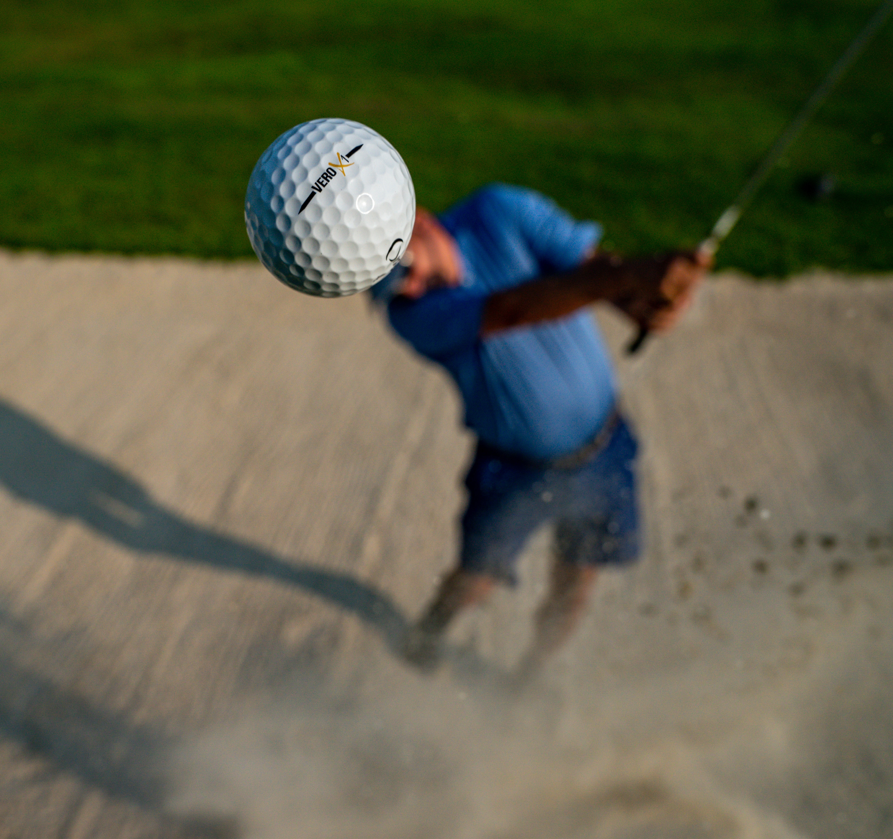

About Us
The Golf Club is a community for golfers in the Philippines to meet, share their passion for golf, and play together. Our headquarters in Taguig City—"The Platinum Golf Club"—offers many amenities and facilities to the players.
The Golf Club is also the host of the annual Philippine Golf Open, one of Asia's biggest golf tournaments. It is held every year since 1986 and is the pride of our community.
Featured Gallery
Have a look at our recent activities and gatherings:




Events
| Date | Event | Venue | Time |
|---|---|---|---|
| Tuesday, May 17 2022 | The Golf Club PH 3rd Anniversary | Casa Miranda, Taguig City | 10:00 AM — 3:00 PM |
| Wednesday, May 25 2022 | Men's Semi-Finals | Bonifacio Golf Course, Taguig City | 2:00 PM — 6:00 PM |
| Thursday, June 02 2022 | Women's Semi-Finals | Bonifacio Golf Course, Taguig City | 2:00 PM — 6:00 PM |
Our Partners
The Golf Club PH is proud to have partnered with the following institutions for the growth and development of the club:

We-Fi Inc.
Green Apple, Lt.
Strawberry Foundation